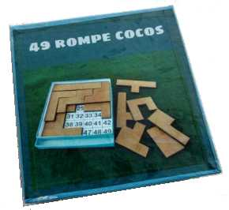
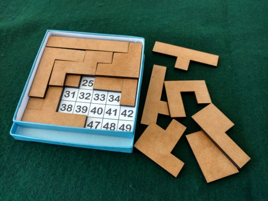

El objetivo es disponer las 16 piezas dentro de la caja, en dos capas, de forma tal que se pueda ver un número por vez.
Hay cuarenta y nueve números, es decir, se tienen cuarenta y nueve rompecabezas en uno.
En cuanto al grado de dificultad digamos que es demandante. O sea que garantiza un largo rato de entretenimiento.


Idea original de Marcel Gillen